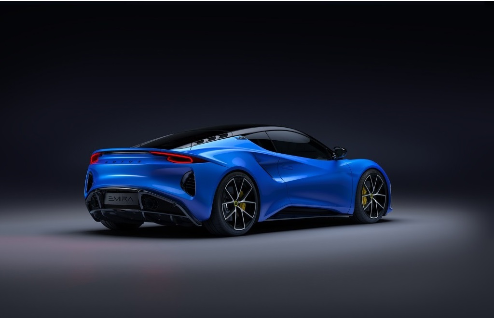

Tällä sivustolle käsittelemme autojen historiaa sekä mitä auto tarkoittaa. Autoa olemme jokainen käyttäneet elämämme aikana, joko kuskina olemme ajaneet sitä tai matkustajana. Tässä teille vähän historiaa.
Auto on moottorilla varustettu ajoneuvo, jota käytetään ihmisten ja tavaroiden kuljettamiseen. Termi "auto" on lyhenne sanasta automobiili, joka tulee kreikan sanasta "auto-" (itse) ja latinan sanasta "mobilis" (liikkuva).
Historiallisesti ajatellen, ensimmäiset ajatukset itsestään liikkuvista ajoneuvoista syntyivät jo 1400-luvulla, kun Leonardo da Vinci pohdiskeli jousivoiman hyödyntämistä. Myöhemmin 1700-luvulla Nicolas Josef Cugnot rakensi ensimmäisen höyryvoimalla kulkevan ajoneuvon. Cugnot'n höyryauto oli kolmipyöräinen ja suunniteltu armeijan käyttöön, ja se liikkui neljän kilometrin tuntinopeudella. Ensimmäinen auto joutui myös pysäyttämään useita kertoja tunnissa boilerin kerätessä höyrynpainetta.
1800-luvulla höyryautojen rinnalle kehitettiin myös muita voimanlähteitä, kuten kaasua ja sähköä käyttäviä autoja. Sähköautojen heikkoudeksi osoittautui suurten akkujen paino ja rajallinen käyttösäde, kun taas kaasukäyttöisten autojen ongelmana oli kaasun varastointi. Vuonna 1886 valmistui ensimmäinen polttomoottoria käyttävä auto, jonka suunnitteli Karl F. Benz. Benz Patent-Motorwagen merkitsi polttomoottoriteknologian läpimurtoa.
1900-luvun alussa autoteollisuus koki nopean kehityksen. Euroopassa autoja valmistettiin pieninä erinä varakkaalle asiakaskunnalle, kun taas Yhdysvalloissa Henry Fordin johtama Ford Motor Company keskittyi massatuotantoon ja liukuhihnamenetelmiin, tehden autoista edullisempia ja siten saavutettavampia suurelle yleisölle. 1920-luvulle tultaessa General Motors ja Chrysler Corporation nousivat merkittäviksi toimijoiksi autoteollisuudessa, tarjoten erilaisia autoja eri asiakasryhmille.
Pohjoismaissa autojen sarjatuotanto alkoi myöhäisemmin. Ruotsissa ensimmäisen auton rakensi Gustaf Eriksson vuonna 1897, ja myöhemmin yhtiöt Scania ja Vabis yhdistyivät, tuottaen Scania-Vabis -merkkisiä ajoneuvoja. Suomessa ensimmäinen yritys sarjatuotantoon tehtiin 1920-luvulla, ja myöhemmin Suomen Autoteollisuus aloitti Sisu-merkkisten ajoneuvojen valmistuksen. Vuonna 1969 perustettu Uudenkaupungin autotehdas on valmistanut useiden kansainvälisten merkkien autoja.
Tänä päivänä auto on olennainen osa modernia yhteiskuntaa, mahdollistaen liikkumisen ja kuljetukset kaikkialla maailmassa.